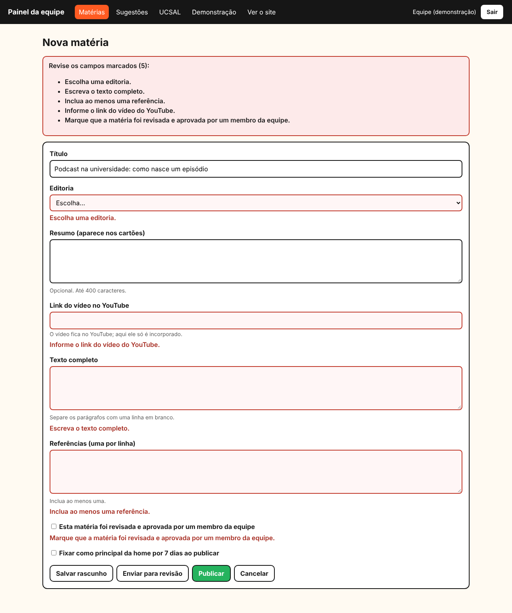
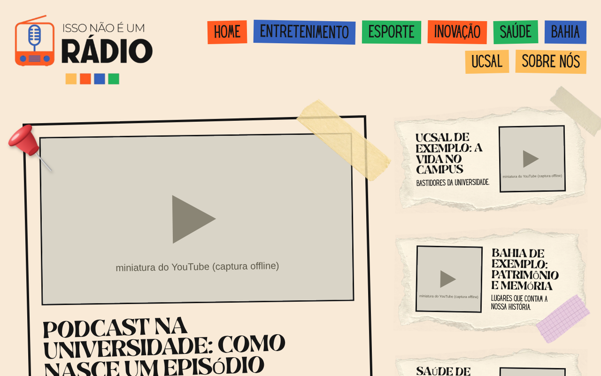
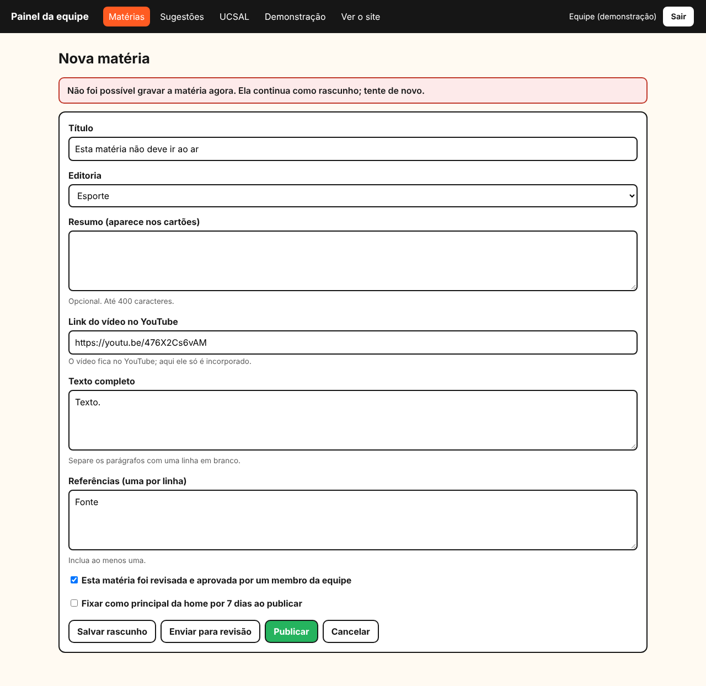

Uma casa própria para o podcast universitário: episódios, matéria completa e informação da UCSAL em um só lugar.
Equipe: [PREENCHER nomes completos] · Turma: [PREENCHER] · Prof. Mario Jorge Pereira
Aluno, professor ou funcionário da UCSAL quer rever um episódio, entender melhor um tema ou saber de uma liga, projeto ou evento.
Hoje procura no Instagram, no YouTube, em cartazes e grupos de WhatsApp. Os episódios se perdem no feed.
Estudantes de Comunicação produzem o conteúdo, mas não têm um canal próprio para publicar e organizar por editoria, nem lugar para a matéria completa.
Sem um arquivo organizado, o trabalho de cada episódio é subaproveitado.
Consequência: informação difícil de achar e conteúdo disperso.
pessoas da comunidade UCSAL responderam a pesquisa
acharam difícil encontrar informações sobre ligas, projetos e eventos (nota 1 ou 2, escala de 1 a 5)
disseram que provavelmente acessariam um site com esse conteúdo
Um só lugar, de acesso livre e sem cadastro: episódio + matéria completa (vídeo, texto e referências), seis editorias, home em capa de jornal e seção UCSAL conferida com a fonte.
Recorte: a equipe publica, o visitante lê. Fluxo principal (P3):
Também no MVP: sugestão de pauta com e-mail e reenvio automático (P5) · seção UCSAL com vigência de eventos (P6).
Fora: busca, app de celular, envio real de e-mail.

1. Publicar incompleto: erros junto de cada campo

2. Publicada: aparece na home e na editoria

3. Gravação falha: erro claro, home intacta
Dados de demonstração preparados · credenciais fictícias · simulador de falhas no painel · contingência em demo/contingencia/
| Problema real | Solução no código |
|---|---|
| E-mail lento ou fora do ar não pode travar o visitante (RN09) | Threads virtuais + CompletableFuture, reenvio pelo Agendador; State da sugestão |
| Home precisa atualizar só depois de gravar (P3) | Observer com eventos sealed; Prototype evita objeto “meio publicado” |
| Destaque automático ou manual de 7 dias (RN05) | Strategy + Factory Method |
| Rotas, validação e JSON sem framework | Reflexão e anotações (@Rota, @Obrigatorio), Front Controller + Chain of Responsibility |
| Demonstrar falhas ao vivo sem mexer no código real | Proxy dinâmico e Decorator |
Camadas por interfaces e uma única raiz de composição (GRASP/SOLID). Mapa completo: docs/arquitetura-pooa.md
java Tarefas.java test)Preexistente declarado: problema, regras, pesquisa e identidade visual vêm da disciplina Processos de Negócios. Novo aqui: toda a implementação Java, testes e documentação técnica. IA usada e declarada (Anexo E).
Obrigado! Perguntas?